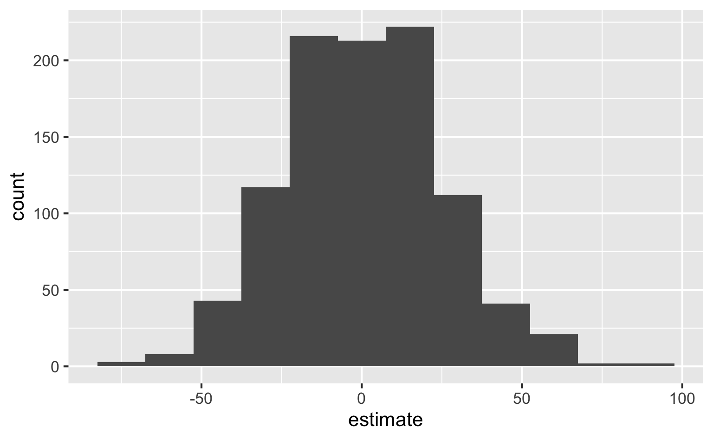
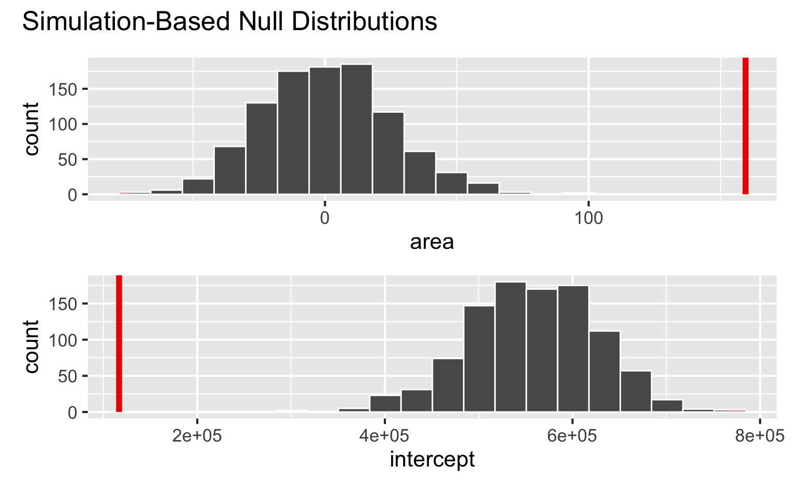

Hypothesis testing
Modeling and inference
Setup
Packages
- tidyverse for data wrangling and visualization
- tidymodels for modeling
- openintro for data
Hypothesis testing
Hypothesis testing
A hypothesis test is a statistical technique used to evaluate competing claims using data
Null hypothesis, \(H_0\): An assumption about the population. “There is nothing going on.”
Alternative hypothesis, \(H_A\): A research question about the population. “There is something going on”.
. . .
Note: Hypotheses are always at the population level!
Setting hypotheses
Null hypothesis, \(H_0\): “There is nothing going on.” The slope of the model for predicting the prices of houses in Duke Forest from their areas is 0, \(\beta_1 = 0\).
Alternative hypothesis, \(H_A\): “There is something going on”. The slope of the model for predicting the prices of houses in Duke Forest from their areas is different than, \(\beta_1 \ne 0\).
Hypothesis testing “mindset”
Assume you live in a world where null hypothesis is true: \(\beta_1 = 0\).
Ask yourself how likely you are to observe the sample statistic, or something even more extreme, in this world: \(P(b_1 \leq -159~or~b_1 \geq 159 | \beta_1 = 0)\) = ?
Hypothesis testing as a court trial
Null hypothesis, \(H_0\): Defendant is innocent
Alternative hypothesis, \(H_A\): Defendant is guilty
. . .
- Present the evidence: Collect data
. . .
-
Judge the evidence: “Could these data plausibly have happened by chance if the null hypothesis were true?”
- Yes: Fail to reject \(H_0\)
- No: Reject \(H_0\)
Hypothesis testing framework
Start with a null hypothesis, \(H_0\), that represents the status quo
Set an alternative hypothesis, \(H_A\), that represents the research question, i.e. what we’re testing for
-
Conduct a hypothesis test under the assumption that the null hypothesis is true and calculate a p-value (probability of observed or more extreme outcome given that the null hypothesis is true)
- if the test results suggest that the data do not provide convincing evidence for the alternative hypothesis, stick with the null hypothesis
- if they do, then reject the null hypothesis in favor of the alternative
Calculate observed slope
… which we have already done:
observed_fit <- duke_forest |>
specify(price ~ area) |>
fit()
observed_fit# A tibble: 2 × 2
term estimate
<chr> <dbl>
1 intercept 116652.
2 area 159.Simulate null distribution
View null distribution
null_dist# A tibble: 2,000 × 3
# Groups: replicate [1,000]
replicate term estimate
<int> <chr> <dbl>
1 1 intercept 535890.
2 1 area 8.64
3 2 intercept 425016.
4 2 area 48.5
5 3 intercept 571721.
6 3 area -4.25
7 4 intercept 516473.
8 4 area 15.6
9 5 intercept 472642.
10 5 area 31.4
# ℹ 1,990 more rowsVisualize null distribution
null_dist |>
filter(term == "area") |>
ggplot(aes(x = estimate)) +
geom_histogram(binwidth = 15)
Visualize null distribution (alternative)
visualize(null_dist) +
shade_p_value(obs_stat = observed_fit, direction = "two-sided")
Get p-value
null_dist |>
get_p_value(obs_stat = observed_fit, direction = "two-sided")Warning: Please be cautious in reporting a p-value of 0. This result
is an approximation based on the number of `reps` chosen in
the `generate()` step.
ℹ See `get_p_value()` (`?infer::get_p_value()`) for more
information.
Please be cautious in reporting a p-value of 0. This result
is an approximation based on the number of `reps` chosen in
the `generate()` step.
ℹ See `get_p_value()` (`?infer::get_p_value()`) for more
information.# A tibble: 2 × 2
term p_value
<chr> <dbl>
1 area 0
2 intercept 0Make a decision
Based on the p-value calculated, what is the conclusion of the hypothesis test?